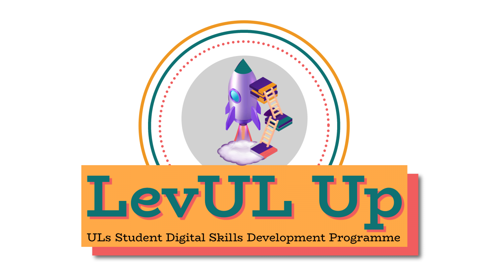

<!DOCTYPE html>
<html lang="en">
  <head>
    <meta charset="utf-8" />
    <meta name="viewport" content="width=device-width, initial-scale=1.0, maximum-scale=1.0, user-scalable=no" />

    <title></title>
    <link rel="stylesheet" href="dist/reveal.css" />
    <link rel="stylesheet" href="dist/theme/consult.css" id="theme" />
    <link rel="stylesheet" href="plugin/highlight/zenburn.css" />
	<link rel="stylesheet" href="css/layout.css" />
	<link rel="stylesheet" href="plugin/customcontrols/style.css">

	<link rel="stylesheet" href="plugin/reveal-pointer/pointer.css" />


    <script defer src="dist/fontawesome/all.min.js"></script>

	<script type="text/javascript">
		var forgetPop = true;
		function onPopState(event) {
			if(forgetPop){
				forgetPop = false;
			} else {
				parent.postMessage(event.target.location.href, "app://obsidian.md");
			}
        }
		window.onpopstate = onPopState;
		window.onmessage = event => {
			if(event.data == "reload"){
				window.document.location.reload();
			}
			forgetPop = true;
		}

		function fitElements(){
			const itemsToFit = document.getElementsByClassName('fitText');
			for (const item in itemsToFit) {
				if (Object.hasOwnProperty.call(itemsToFit, item)) {
					var element = itemsToFit[item];
					fitElement(element,1, 1000);
					element.classList.remove('fitText');
				}
			}
		}

		function fitElement(element, start, end){

			let size = (end + start) / 2;
			element.style.fontSize = `${size}px`;

			if(Math.abs(start - end) < 1){
				while(element.scrollHeight > element.offsetHeight){
					size--;
					element.style.fontSize = `${size}px`;
				}
				return;
			}

			if(element.scrollHeight > element.offsetHeight){
				fitElement(element, start, size);
			} else {
				fitElement(element, size, end);
			}		
		}


		document.onreadystatechange = () => {
			fitElements();
			if (document.readyState === 'complete') {
				if (window.location.href.indexOf("?export") != -1){
					parent.postMessage(event.target.location.href, "app://obsidian.md");
				}
				if (window.location.href.indexOf("print-pdf") != -1){
					let stateCheck = setInterval(() => {
						clearInterval(stateCheck);
						window.print();
					}, 250);
				}
			}
	};


        </script>
  </head>
  <body>
    <div class="reveal">
      <div class="slides"><section  data-markdown><script type="text/template"><!-- .slide: class="drop" -->
<div class="" style="position: absolute; left: 0px; top: 0px; height: 700px; width: 960px; min-height: 700px; display: flex; flex-direction: column; align-items: center; justify-content: center" absolute="true">




# LevUL Up Autumn 2022
### David Moloney
#### CTL Team Meeting, 9 Nov 2022
</div></script></section><section  data-markdown><script type="text/template"><!-- .slide: class="drop" -->
<div class="" style="position: absolute; left: 0px; top: 0px; height: 700px; width: 960px; min-height: 700px; display: flex; flex-direction: column; align-items: center; justify-content: center" absolute="true">

# What Was Done
- A blended approach was taken for the first time
- Digital Skills Awareness Course, 588 enrolled in student role. 19 have earned digital badges for successful completion
- Ran 16 workshops, repeated. 27 workshop instances in total
- Recordings made available on a single channel
- Mapped workshops to the European Digital Competence Framework for Citizens (DigComp)
</div></script></section><section  data-markdown><script type="text/template"><!-- .slide: class="drop" -->
<div class="" style="position: absolute; left: 0px; top: 0px; height: 700px; width: 960px; min-height: 700px; display: flex; flex-direction: column; align-items: center; justify-content: center" absolute="true">


</div></script></section><section  data-markdown><script type="text/template"><!-- .slide: class="drop" -->
<div class="" style="position: absolute; left: 0px; top: 0px; height: 700px; width: 960px; min-height: 700px; display: flex; flex-direction: column; align-items: center; justify-content: center" absolute="true">

# Promotion
-   Weekly email blasts from CTL@ul.ie direct to students; posts to UL Connect for staff
-   Social media - Instagram, TikTok.
-   Digital Screens in Library
-   Sulis Homepage
-   F7Ws initiative further promo’ed LevUL Up to the student body on their socials
</div></script></section><section  data-markdown><script type="text/template"><!-- .slide: class="drop" -->
<div class="" style="position: absolute; left: 0px; top: 0px; height: 700px; width: 960px; min-height: 700px; display: flex; flex-direction: column; align-items: center; justify-content: center" absolute="true">

# Figures

|                                                               |   Enrolled in Digital Skills Awareness Course      |  Earned digital badge     <br>(Total, not cumulative)  |  Registered for workshops       |  Attended workshops                |  Attendance %       |
|:--------------------------------------------------------------|:---------------------------------------------------|:-------------------------------------------------------|:--------------------------------|:-----------------------------------|:--------------------|
|     1. 17-21 Oct.<div><br></div><div>(12 workshops)   </div>  |                                               578  |                                                    18  |                            217  |                               108  |  ~51%               |
|   2. 24-28 Oct.<div><br></div><div>(12 workshops)     </div>  |                                               588  |                                                    19  |                             138 |                        47<br>(tbc) | ~34%                |
|          3. 31 Oct - 4 Nov.<br><br><div>(3 workshops) </div>  |                                               588  |                                                    19  |                             41  |                                13  |  ~32%               |
|   Total<br>(27 workshop instances)                            |                                               588  |                                                    19  |                            396  |                                168 | ~43%                |
</div></script></section><section  data-markdown><script type="text/template"><!-- .slide: class="drop" -->
<div class="" style="position: absolute; left: 0px; top: 0px; height: 700px; width: 960px; min-height: 700px; display: flex; flex-direction: column; align-items: center; justify-content: center" absolute="true">

# Presenter Team Autumn 2022

|    Presenter                                                       |    Affiliation                                                                   |   Live Workshops    |   Workshop Instances   |
|:-------------------------------------------------------------------|:---------------------------------------------------------------------------------|:--------------------|:-----------------------|
|    David Moloney/<div>Cynthia Anthony<br></div>                    |   CTL                                            <br>CTL<br>(Student Intern)<br> |      3              |               6        |
|    Lawrence Cleary                                                 |   CTL             <br>(Regional Writing Centre)                                  |      1              |               2        |
|   Michelle Breen                                                   |   Library                                                                        |                 1   |                    2   |
|   Jesse Waters                                                     |   Library                                                                        |                 2   |                    4   |
|   Louise O'Shea/<br>Ryan O'Keeffe/<br>James Hourigan               |   Library (Makerspace)                                                           |                 2   |                    4   |
|   Peter Reilly                                                     |   Library                                                                        |                 2   |                    2   |
|   Míchéal O'hAodha                                                 |   Library                                                                        |                 1   |                    1   |
|   Anna Marie Gildea/<br>Jennifer Cosgrave/<br>Mary C. O' Donoghue  |   ITD                                                                            |                  1  |                     2  |
|   Kris Harte                                                       |   ITD                                                                            |                 1   |                    1   |
|   Eamon T. Fitzgerald                                              |   ITD                                                                            |                 1   |                    2   |
|   Thomas O'Shaughnessy                                             |   EATC                                                                           |                 1   |                    1   |
|                                                                    |                                                                                  |                 16  |                    27  |
</div></script></section><section  data-markdown><script type="text/template"><!-- .slide: class="drop" -->
<div class="" style="position: absolute; left: 0px; top: 0px; height: 700px; width: 960px; min-height: 700px; display: flex; flex-direction: column; align-items: center; justify-content: center" absolute="true">

# Workshops 
|   Presenter                                                         |   Affiliation                                                                    |  Live Workshops  |  Workshop Titles                                                                                                                                                                                                                                                                                                                                                                                                                                                                                                            | Mode      |
|:--------------------------------------------------------------------|:---------------------------------------------------------------------------------|:-----------------|:----------------------------------------------------------------------------------------------------------------------------------------------------------------------------------------------------------------------------------------------------------------------------------------------------------------------------------------------------------------------------------------------------------------------------------------------------------------------------------------------------------------------------|:----------|
|   David Moloney/<br>Cynthia Anthony<br>                             |   CTL                                           <br>CTL<br>(Student Intern)<br>  |               3  |  <div>- Discover Your Digital Skill and Competence Levels&nbsp;</div><div>- Introduction to LinkedIn Learning for Students</div><div>- Introduction to Wordpress.com for Students</div>                                                                                                                                                                                                                                                                                                                                     | Both      |
|   Lawrence Cleary                                                   |   CTL             <br>(Regional Writing Centre)                                  |               1  |  -&nbsp;Proofing Your Paper Using MS Word Tools                                                                                                                                                                                                                                                                                                                                                                                                                                                                             | Both      |
|   Michelle Breen                                                    |   Library                                                                        |               1  |  -&nbsp;Sourcing Copyright Free Images for Your Assignments                                                                                                                                                                                                                                                                                                                                                                                                                                                                 | Both      |
|   Jesse Waters                                                      |   Library                                                                        |               2  |  - Searching Online Databases<div>- Presenting Your Research Visually</div>                                                                                                                                                                                                                                                                                                                                                                                                                                                 | Both      |
|   Louise O'Shea/<br>Ryan O'Keeffe/<br>James Hourigan                |   Library (Makerspace)                                                           |               2  |  -&nbsp;Getting started with 3D Printing using Tinkercad<div><span style="color: var(--text-normal); font-family: var(--font-interface); font-size: var(--font-ui-medium); background-color: var(--background-primary);">-&nbsp;</span><span style="background-color: var(--background-primary);">Podcasting Production &amp; Fundamentals</span></div>                                                                                                                                                                     | Both      |
|   Peter Reilly                                                      |   Library                                                                        |               2  |  -&nbsp;7 Steps to Assignment Success<div><span style="background-color: var(--background-primary); color: var(--text-normal); font-family: var(--font-interface); font-size: var(--font-ui-medium);">-&nbsp;&nbsp;</span><span style="background-color: var(--background-primary);">Critically Evaluating Sources: The CRAAP test</span></div>                                                                                                                                                                             | In-person |
|   Míchéal O'hAodha                                                  |   Library                                                                        |               1  |  - Notetaking in a Digital World                                                                                                                                                                                                                                                                                                                                                                                                                                                                                            | Online    |
|   Anna Marie Gildea/<br>Jennifer Cosgrave/<br>Mary C. O' Donoghue   |   ITD                                                                            |               1  |  <div><span style="background-color: var(--background-primary); color: var(--text-normal); font-family: var(--font-interface); font-size: var(--font-ui-medium);">-&nbsp;</span><span style="background-color: var(--background-primary);">How to become a Super User on MS Teams &amp; OneDrive</span></div>                                                                                                                                                                                                               | Both      |
|   Kris Harte                                                        |   ITD                                                                            |               1  |  - Getting Started in a Virtual Learning Environment                                                                                                                                                                                                                                                                                                                                                                                                                                                                        | In-person |
|   Eamon T. Fitzgerald                                               |   ITD                                                                            |               1  |  - 7 Simple Steps to Stay Safe Online: Protecting your Digital Identity                                                                                                                                                                                                                                                                                                                                                                                                                                                     | Both      |
|   Thomas O'Shaughnessy                                              |   EATC                                                                           |               1  |  - Enhancing Productivity &amp; Accessibility with Inbuilt Technologies&nbsp;                                                                                                                                                                                                                                                                                                                                                                                                                                               | Online    |
|                                                                     |                                                                                  |              16  |                                                                                                                                                                                                                                                                                                                                                                                                                                                                                                                             |           |
</div></script></section><section  data-markdown><script type="text/template"><!-- .slide: class="drop" -->
<div class="" style="position: absolute; left: 0px; top: 0px; height: 700px; width: 960px; min-height: 700px; display: flex; flex-direction: column; align-items: center; justify-content: center" absolute="true">

# Plans
- VLE Project Training Subgroup: Student Support for Brightspace via LevUL Up
- Create Structured Learning Pathways aligned to areas and competences defined in DigComp by integrating curated LinkedIn Learning courses
	- Develop digital badges for students to attain for each pathway
- Create greater on-campus visibility and presence
</div></script></section><section  data-markdown><script type="text/template"><!-- .slide: class="drop" -->
<div class="" style="position: absolute; left: 0px; top: 0px; height: 700px; width: 960px; min-height: 700px; display: flex; flex-direction: column; align-items: center; justify-content: center" absolute="true">

# Invitation: Would you (or someone you work with) like to be involved?
### I’d be delighted to have an initial chat. No commitment! Send me an email or Teams message.
</div>

<aside class="notes"><p>If possible, I’d like to try to expand out the representation from CTL a bit more. With some of your skillsets, I think that many of you would be great fits to deliver a workshop or perhaps something similar, if you have an interest.
I’d be delighted to have an initial chat, a sort a sense-making exercise to see if things could align between the programme and your work, and/or to explore what being involved might entail for you.</p>
</aside></script></section><section  data-markdown><script type="text/template"><!-- .slide: class="drop" -->
<div class="" style="position: absolute; left: 0px; top: 0px; height: 700px; width: 960px; min-height: 700px; display: flex; flex-direction: column; align-items: center; justify-content: center" absolute="true">

# Thank You
</div></script></section></div>
    </div>

    <script src="dist/reveal.js"></script>

    <script src="plugin/markdown/markdown.js"></script>
    <script src="plugin/highlight/highlight.js"></script>
    <script src="plugin/zoom/zoom.js"></script>
    <script src="plugin/notes/notes.js"></script>
    <script src="plugin/math/math.js"></script>
	<script src="plugin/mermaid/mermaid.js"></script>
	<script src="plugin/chart/chart.min.js"></script>
	<script src="plugin/chart/plugin.js"></script>
	<script src="plugin/menu/menu.js"></script>
	<script src="plugin/customcontrols/plugin.js"></script>
	<script src="plugin/reveal-pointer/pointer.js"></script>

    <script>
      function extend() {
        var target = {};
        for (var i = 0; i < arguments.length; i++) {
          var source = arguments[i];
          for (var key in source) {
            if (source.hasOwnProperty(key)) {
              target[key] = source[key];
            }
          }
        }
        return target;
      }

	  function isLight(color) {
		let hex = color.replace('#', '');

		// convert #fff => #ffffff
		if(hex.length == 3){
			hex = `${hex[0]}${hex[0]}${hex[1]}${hex[1]}${hex[2]}${hex[2]}`;
		}

		const c_r = parseInt(hex.substr(0, 2), 16);
		const c_g = parseInt(hex.substr(2, 2), 16);
		const c_b = parseInt(hex.substr(4, 2), 16);
		const brightness = ((c_r * 299) + (c_g * 587) + (c_b * 114)) / 1000;
		return brightness > 155;
	}

	var bgColor = getComputedStyle(document.documentElement).getPropertyValue('--r-background-color').trim();
	var isLight = isLight(bgColor);

	if(isLight){
		document.body.classList.add('has-light-background');
	} else {
		document.body.classList.add('has-dark-background');
	}

      // default options to init reveal.js
      var defaultOptions = {
        controls: true,
        progress: true,
        history: true,
        center: true,
        transition: 'default', // none/fade/slide/convex/concave/zoom
        plugins: [
          RevealMarkdown,
          RevealHighlight,
          RevealZoom,
          RevealNotes,
          RevealMath.MathJax3,
		  RevealMermaid,
		  RevealChart,
		  RevealCustomControls,
		  RevealMenu,
	      RevealPointer,
        ],


    	allottedTime: 120 * 1000,

		mathjax3: {
			mathjax: 'plugin/math/mathjax/tex-mml-chtml.js',
		},
		markdown: {
		  gfm: true,
		  mangle: true,
		  pedantic: false,
		  smartLists: false,
		  smartypants: false,
		},

		mermaid: {
			theme: isLight ? 'default' : 'dark',
		},

		customcontrols: {
			controls: [
				{id: 'toggle-overview',
				title: 'Toggle overview (O)',
				icon: '<i class="fa fa-th"></i>',
				action: 'Reveal.toggleOverview();'
				},
			]
		},
		menu: {
			loadIcons: false
		}
      };

      // options from URL query string
      var queryOptions = Reveal().getQueryHash() || {};

      var options = extend(defaultOptions, {"width":960,"height":700,"margin":0.04,"controls":true,"progress":true,"slideNumber":false,"transition":"slide","transitionSpeed":"default"}, queryOptions);
    </script>

    <script>
      Reveal.initialize(options);
    </script>
  </body>

  <!-- created with Advanced Slides -->
</html>
